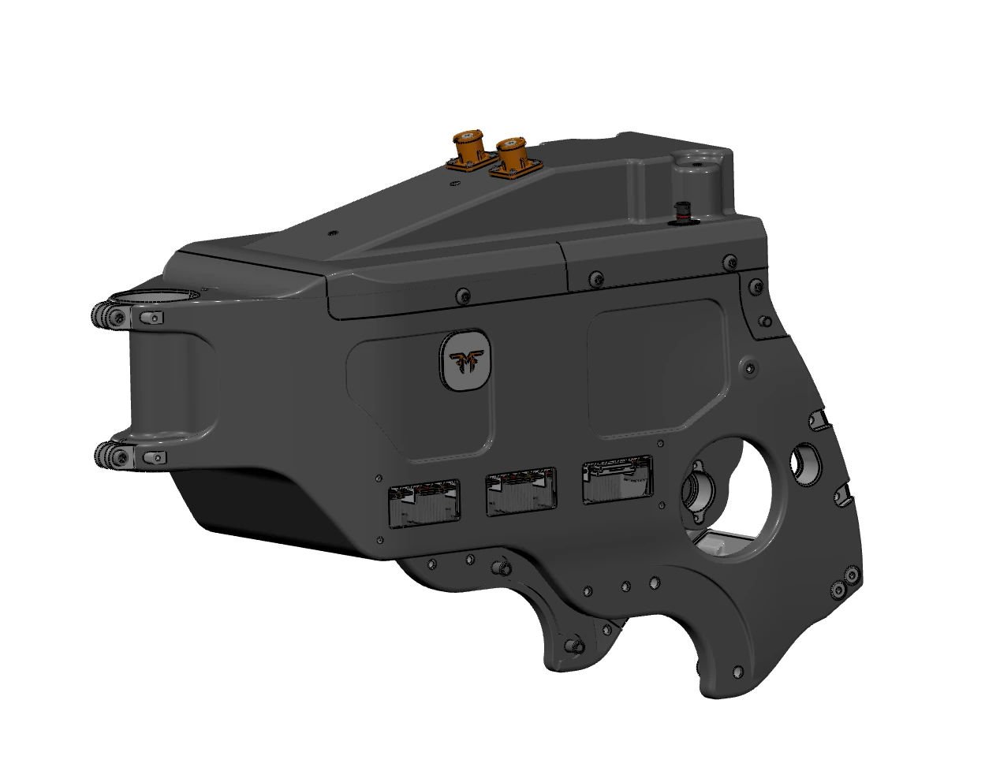
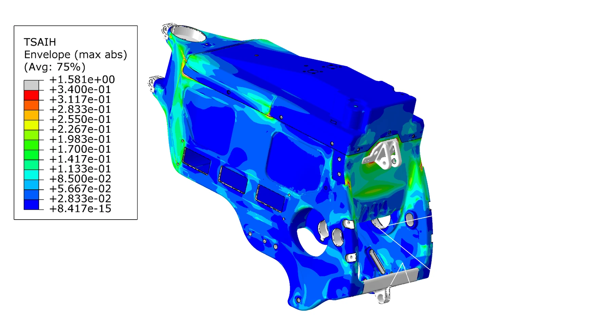
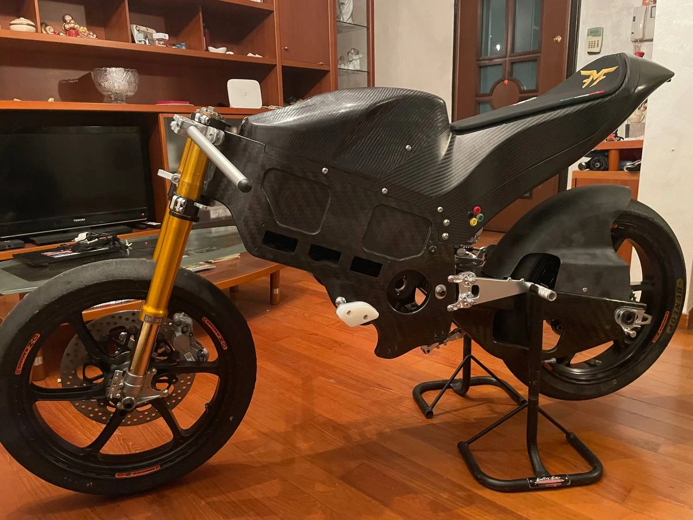
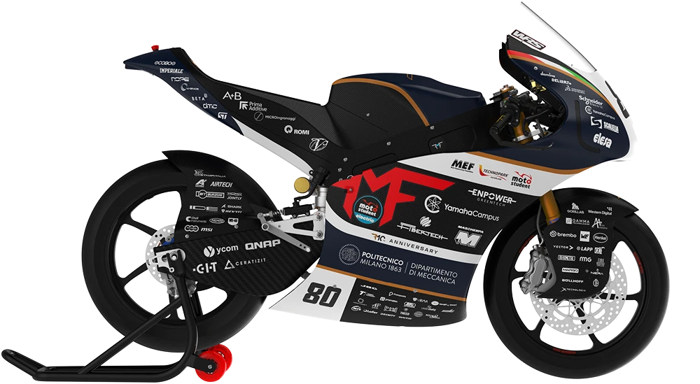

Engineering Challenge
Develop a lightweight primary structure capable of combining structural performance, packaging, precision interfaces, composite manufacturability and reliable integration with the complete motorcycle.
Composite Structures · Racing Chassis
From structural concept and tooling to a manufactured, track-validated motorcycle chassis
End-to-end development of a primary carbon-composite motorcycle structure. I contributed to the chassis design, mould engineering, ply-cutting preparation, structural-analysis loop, manufacturing and final validation on the complete motorcycle.

Develop a lightweight primary structure capable of combining structural performance, packaging, precision interfaces, composite manufacturability and reliable integration with the complete motorcycle.
Why the Project Matters
A racing chassis must carry loads while controlling stiffness, mass and geometric accuracy. At the same time, it must accommodate multiple mechanical interfaces, internal volumes, removable elements and the manufacturing constraints of a closed composite structure.
The design therefore evolved as a coupled engineering problem: external geometry, internal architecture, inserts, laminate strategy, tooling and assembly access had to remain compatible throughout every iteration.
The objective was not to create a visually convincing carbon part. It was to deliver a functional primary structure that could be manufactured, assembled and used on the motorcycle.
Structural Development

I followed the structural-analysis loop and used the resulting failure-index distributions to understand how critical zones changed as the chassis geometry and composite architecture evolved.
Particular attention was required around concentrated interfaces, geometric transitions, openings and regions where load paths moved between the laminate and metallic inserts.
The analysis was not treated as a final verification step. It remained connected to CAD and manufacturing decisions, allowing reinforcement to be placed where it was structurally useful and producible.
Composite Architecture
Laminate System
Hybrid Integration
Tooling & Production
Defined splits, access, interfaces and geometry with lamination and demoulding in mind.
Designed the mould set and production details required to reproduce the chassis geometry.
Prepared cutting data, ply families and orientation information for the laminate build-up.
Participated directly in lay-up, insert integration, mould closure, curing and final assembly.

Direct involvement in production exposed the gap between a feasible CAD model and a repeatable composite process. Ply access, insert positioning, local thickness, mould handling and assembly sequence all became design inputs rather than workshop problems left for later.
That feedback loop was essential to move from a complex digital structure to a complete manufactured chassis with the required interfaces in the correct position.
Motorcycle Integration
The chassis was completed as a functional motorcycle structure, not as a standalone demonstrator. Final checks included assembly compatibility, interface verification and testing on the complete vehicle.
Track validation closed the development loop by confirming that the CAD, analysis, tooling and production decisions could operate together under real use conditions.
The project covered the full lifecycle of a safety-critical composite structure: from design intent to a manufactured and running racing motorcycle.

Methods & Materials